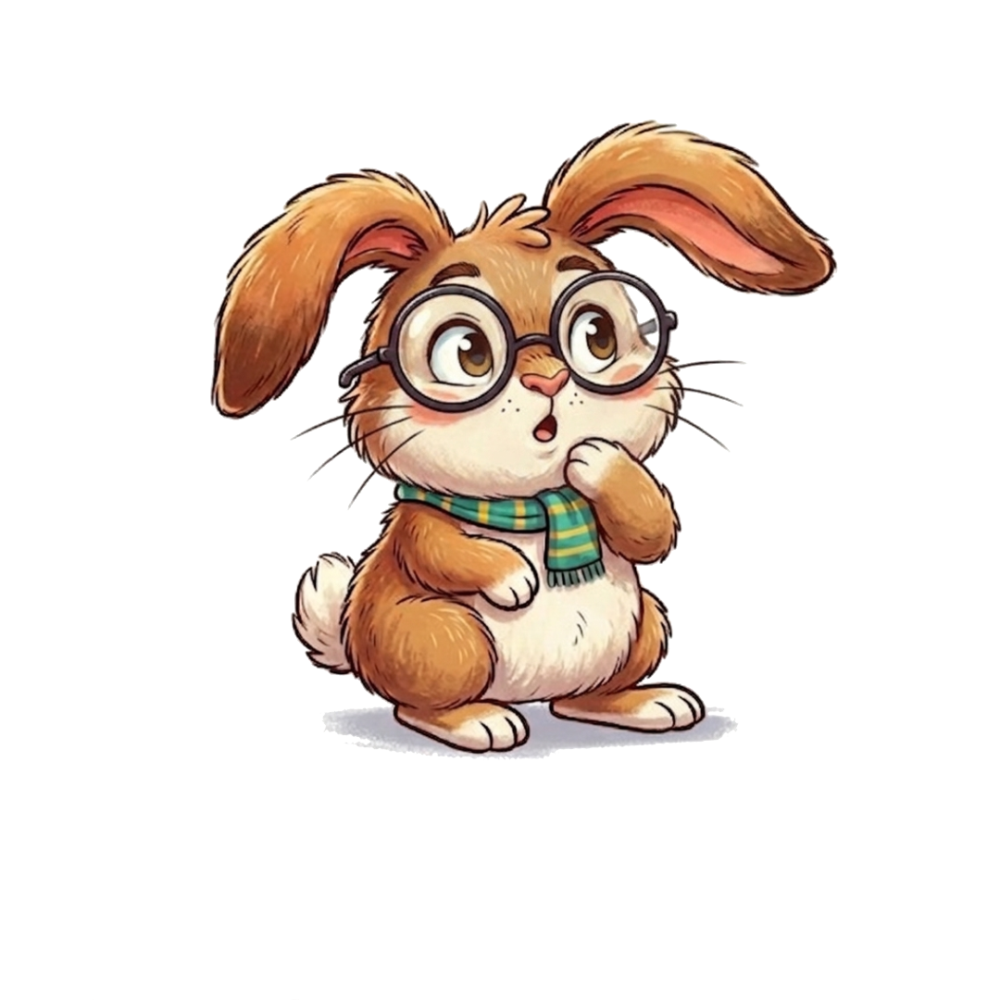

Desafio 1 de 3
Alimentação
Está na hora de organizar a alimentação do Nupi. Entre as três opções abaixo, qual alimento deve ficar disponível para ele durante todo o dia?

Observe as opções com atenção e escolha como você organizaria a alimentação do Nupi.
Observe novamente
A ração peletizada faz parte da alimentação do Nupi, mas deve ser oferecida em porções controladas. Deixar o pote cheio durante todo o dia pode fazer com que ele consuma mais ração do que precisa.
Pista: procure o alimento que ajuda no funcionamento do sistema digestivo e no desgaste natural dos dentes.
Observe novamente
A cenoura não deve ser a base da alimentação. Ela contém bastante açúcar e deve ser oferecida apenas ocasionalmente, em pequenas quantidades.
Pista: pense em um alimento rico em fibras que o coelho possa mastigar ao longo de todo o dia.
Muito bem!
O feno de capim é a base da alimentação do Nupi e deve permanecer disponível durante todo o dia. Ele é rico em fibras, contribui para o funcionamento adequado do sistema digestivo e ajuda no desgaste dos dentes.